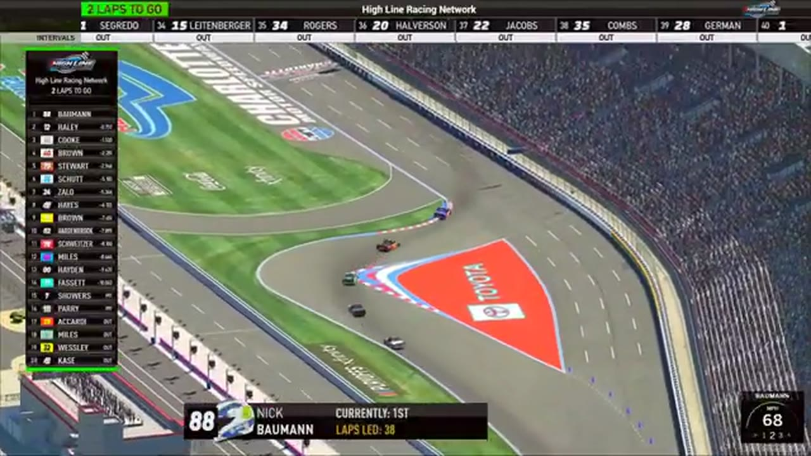

Bowman Sweeps the Roval
Pole, fastest lap, most laps led, the lone stage, and the win: Nick Bowman left Charlotte with every major companion stat.

Nick Bowman arrived at the Charlotte Roval with the pole and left with every major race statistic HLRN’s companion could give him: fastest lap, most laps led, the lone stage, and the feature win. Trevor Haley finished second and Jacob Brown third. Even the night’s most unusual strategic moment belonged to Bowman, whose stage-winning route crossed the timing line while he was entering pit road and forced the league to change how future road-course stages would be handled.
The opening green began a race in which staying on the circuit was almost as important as finding speed. Evan Perry spun during the early run, and the broadcast later sorted multiple off-track calls under caution. James Hardenbrook entered the first notable pit-strategy swing. Each interruption reinforced the Roval’s central demand: a driver could be quick enough to lead and still lose the race through one missed braking point, one damaged corner, or one badly timed stop.
Bowman avoided those traps while building the statistical line that would define the event. A review involving Brown remained unresolved as the top ten reformed, but Bowman increasingly became the late-race benchmark. Randy Switzer and Ricky Miles appeared in damage signals during a live battle, and another multi-car crash forced the field back under yellow. The race kept removing clean laps from Bowman’s advantage without removing him from the front.
The stage finish produced the night’s defining strategic argument. With a large lead, Bowman crossed the stage timing line while committing to pit road. The booth had to determine whether the move satisfied the existing procedure. It did, and Bowman received the stage result. HLRN later announced that pit entry would close before future road-course stage finishes, preventing the same route from being used again. The result stood; the rule evolved.
That sequence should not be recast as misconduct. Bowman used the procedure available to him, and the league responded after seeing its effect. The distinction makes the Roval a rare race in which one driver’s strategy changed not only track position but the framework for later events. He had already supplied the pace; now he had supplied the rules discussion.
The strategic ruling also sharpened the competitive burden that remained. Bowman could not win the feature by pointing to the stage decision; he still had to survive the cautions and launch beside Haley for the final run. Each interruption removed some of the cushion built by his fastest lap and long control. The car with the best statistical file was repeatedly brought back within one braking zone of a teammate whose season had been defined by converting restarts into points.
Haley and Brown reached the finish through different routes. Haley stayed close enough to force Bowman to execute the win-or-wreck launch rather than coast to the result, while Brown endured the off-track calls and unresolved review to retain third. Their supported positions keep Bowman’s sweep from becoming an isolated stat sheet. The pole winner had two actual opponents at the end: one beside him with a chance to take P1 and another close enough to complete the podium if the front row failed.
The final cautions still gave Haley a route to challenge. Joe Quan saved an opening-lap slide before another yellow, and HLRN eventually declared the next Roval launch a win-or-wreck attempt. Bowman and Haley brought the field to green together. Haley’s setup and late pace kept him close, but the pass never arrived. Brown remained in the third supported position while the teammates completed the last circuit.
The primary result sequence and post-race review placed Bowman first, Haley second, and Brown third. That podium carried more than three positions. Haley added another major finish to a season built through stage strength and consistency; Brown returned to the podium; Bowman converted the most complete package of speed and control recovered anywhere in Season 1.
Bowman’s winner interview and Haley’s assessment of his own Roval setup gave the finish two driver perspectives. Neither changed the central competitive conclusion. Bowman had controlled qualifying, the clock, the lap count, the stage, and the feature. The complete order behind Brown remains open, as does the exact number of laps Bowman led, but those missing numbers do not dilute the channel-authored superlative that he led the most.
The procedure change carries the result beyond one night without turning the story into a rules memo. Future road-course leaders would no longer be able to cross the stage timing line while entering a newly closed pit lane, so Bowman’s successful attempt became a one-race competitive artifact. He won under the rule in force, and HLRN changed the rule after seeing the outcome. That sequence preserves both fairness to the driver and the league’s decision to prevent the same strategic shortcut from defining another stage.
The Roval did not simply give Bowman his first supported HLRN victory. It supplied the argument for why he won and what changed because of it. He was the fastest single-lap driver, the longest-serving leader, the stage strategist, and the final leader. Haley and Brown gave the finish resistance; the rule change gave the night a legacy. No other Season 1 performance aligned so many supported pieces behind one name.
Receipts behind the report
These links open the exact HLRN source windows used by the editorial file.
- OPENING · RECORD
Bowman's sweep is read at the top
HLRN credits Nick Bowman with pole, fastest lap, most laps led, stage, and win.
▶ 0:13 SOURCE WINDOW - MIDDLE · STRATEGY
Bowman wins the stage through pit road
A large lead lets Bowman cross the stage line while entering the pits, forcing a timing review.
▶ 2:05 SOURCE WINDOW - CLOSING · FINISH
Haley cannot close the Roval gap
Trevor Haley follows through the final circuit, but Bowman maintains control to the checkered.
▶ 3:59 SOURCE WINDOW - CLOSING · RULE
The loophole closes after the race
The companion announces that road-course pit entry will close before future stage finishes.
▶ 5:59 SOURCE WINDOW
The Bowman–Haley–Brown podium is supported; the order beyond P3 remains open. The rule-change statement follows the HLRN companion program.